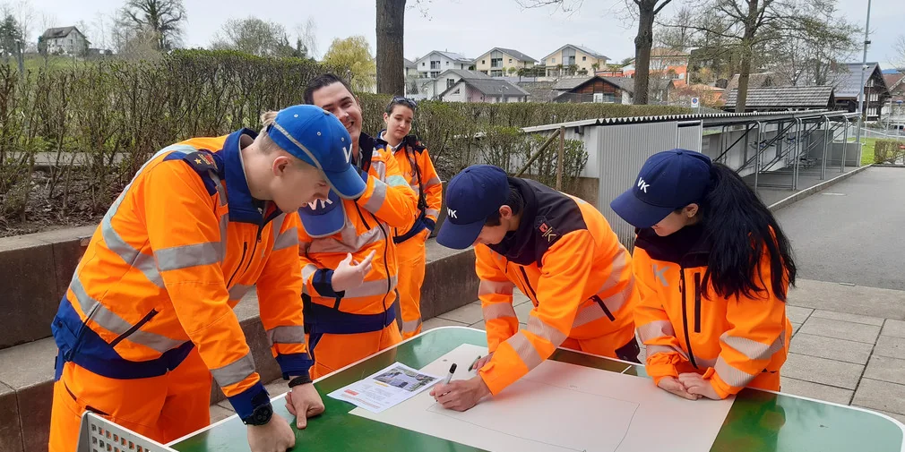
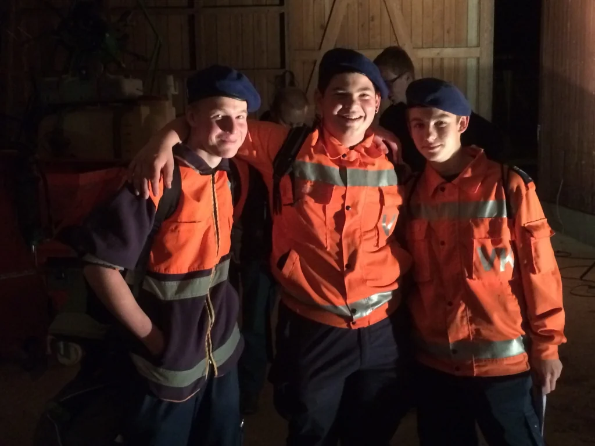
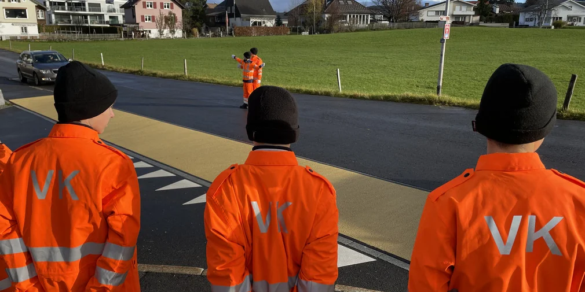
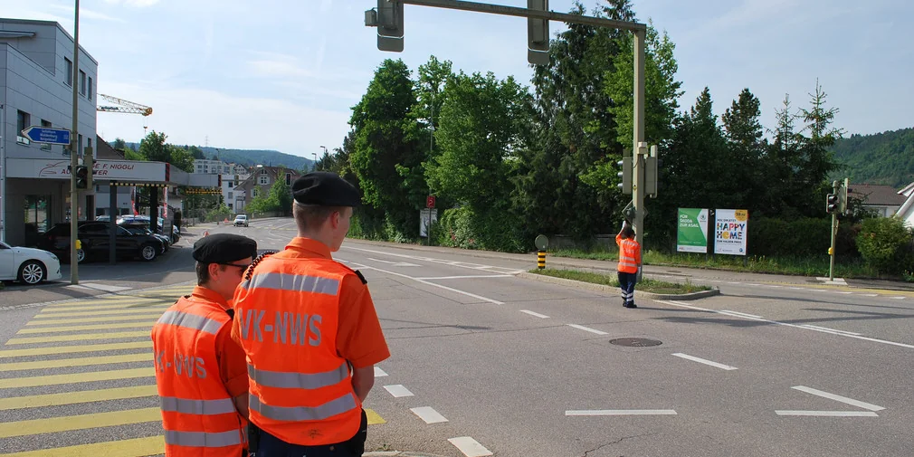
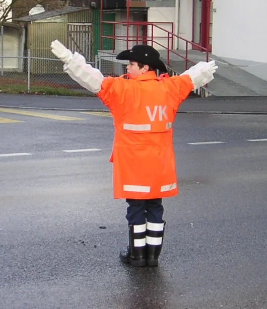

Markenportal · Verkehrskadetten
Jugend
bewegt
Verkehr.
Das visuelle Erscheinungsbild der Dachmarke Verkehrskadetten — Logos, Farben, Typografie und alle Brand-Assets für Sektionen und Partner.
Markenportal · Verkehrskadetten
Das visuelle Erscheinungsbild der Dachmarke Verkehrskadetten — Logos, Farben, Typografie und alle Brand-Assets für Sektionen und Partner.
Markenidentität
Über 20 Abteilungen in der ganzen Schweiz tragen dieselbe orange Uniform — ein einheitliches Erscheinungsbild schafft Wiedererkennung und Vertrauen bei Jugendlichen, Eltern, Behörden und Veranstaltenden. Der Slogan «Jugend bewegt Verkehr» verbindet drei Ebenen: Jugend in Verantwortung, aktives Engagement, und Verkehrssicherheit.
Wofür stehen wir?
Jugend in Verantwortung. Sicherheit durch freiwilliges Engagement.
Wie arbeiten wir?
Professionell ausgebildet, verlässlich im Einsatz, einheitlich im Auftritt.
Was verbindet uns?
Gemeinschaft, Disziplin — und die orange Uniform.
Logo-System
Das Logo-System besteht aus Bildmarke, Wort-Bild-Kombination und Schriftmarke — je in verschiedenen Farbvarianten für unterschiedliche Hintergründe und Druckverfahren. Immer nur die freigegebenen Varianten verwenden.
Schutzraum = Mindestabstand × (Höhe des Logos) rundum freilassen
Farben
VK Orange ist die Primärfarbe — klar, energetisch, unverwechselbar. Auf eine Farbkachel klicken, um den HEX-Wert in die Zwischenablage zu kopieren.
Primary
VK Orange
#FF6300
RGB 255 · 99 · 0
CMYK 0 · 61 · 100 · 0
Secondary
VK Schwarz
#1A1A1A
RGB 26 · 26 · 26
CMYK 0 · 0 · 0 · 93
Accent
VK Blau
#2F5D77
RGB 47 · 93 · 119
CMYK 60 · 22 · 0 · 53
Background
VK Weiss
#F8F8F8
RGB 248 · 248 · 248
CMYK 0 · 0 · 0 · 2
Typografie
Fakt von OurType ist die exklusive Hausschrift der Verkehrskadetten. Bold für Headlines und Akzente, Normal für Fliesstext.
| Display / H1 | 40–64 px · Bold · Zeilenabstand 1.0–1.1 |
| Headline / H2 | 24–32 px · Bold · Zeilenabstand 1.15 |
| Subheading / H3 | 16–20 px · Bold · Zeilenabstand 1.3 |
| Body Text | 14–16 px · Normal · Zeilenabstand 1.6–1.7 |
| Caption / Label | 10–12 px · Bold · Grossbuchstaben + Letter-Spacing |
TTF + OTF · Lizenz: OurType — nur für interne VK-Nutzung
Falls Fakt nicht verfügbar ist (externe Kommunikation, E-Mail, Office), diese Alternativen verwenden:
Bildsprache
Die Bildwelt zeigt Jugendliche im echten Einsatz — authentisch, nah und kompetent. Bilder transportieren, was Worte allein nicht können: echte Verantwortung, echter Teamgeist.





Downloads
Alle offiziellen Dateien zum Download. Nur diese freigegebenen Versionen verwenden. Bei Fragen: marke-vk@vka-albis.ch
Logos Dachmarke
Alle Varianten: Kombination, Bildmarke, Schriftmarke — SVG (RGB) und PDF (CMYK) in orange, weiss und outline.
↓ ZIPLogos Abteilungen
Wähle deine Abteilung im Header — der Download passt sich automatisch an.
Abteilung wählenBrand Manual
Das vollständige Marken-Manual der Verkehrskadetten. Strategie, Identität und Anwendung.
↓ PDFAdobe Illustrator
Original-.ai-Dateien für alle Marken und Familienmarken. Für Druckproduktionen.
↓ ZIPFarbpalette
Alle Farbwerte als Adobe ASE Swatch-Datei. HEX, RGB und CMYK für alle Adobe-Programme.
↓ ASE